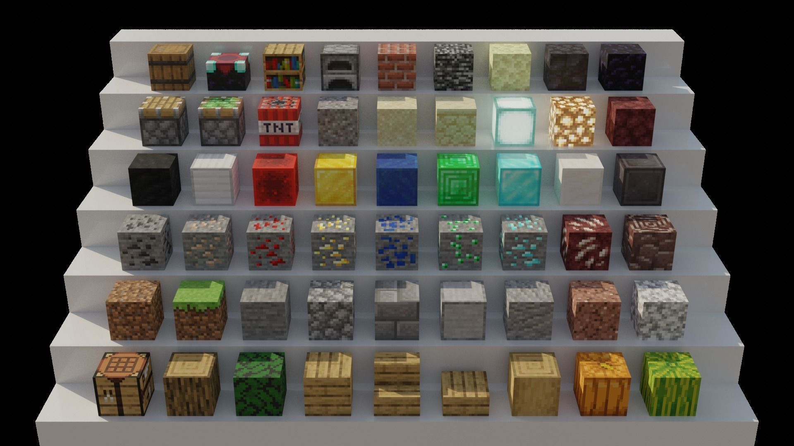
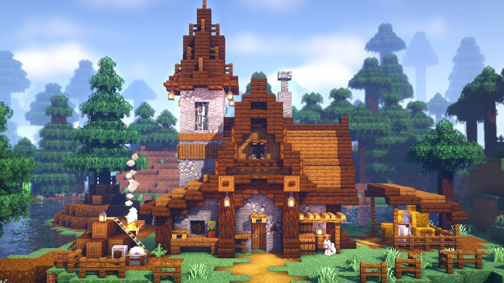
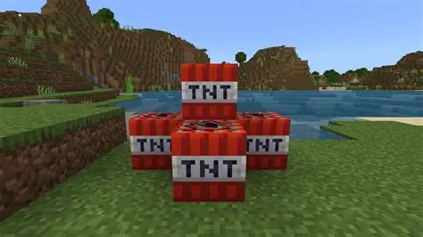
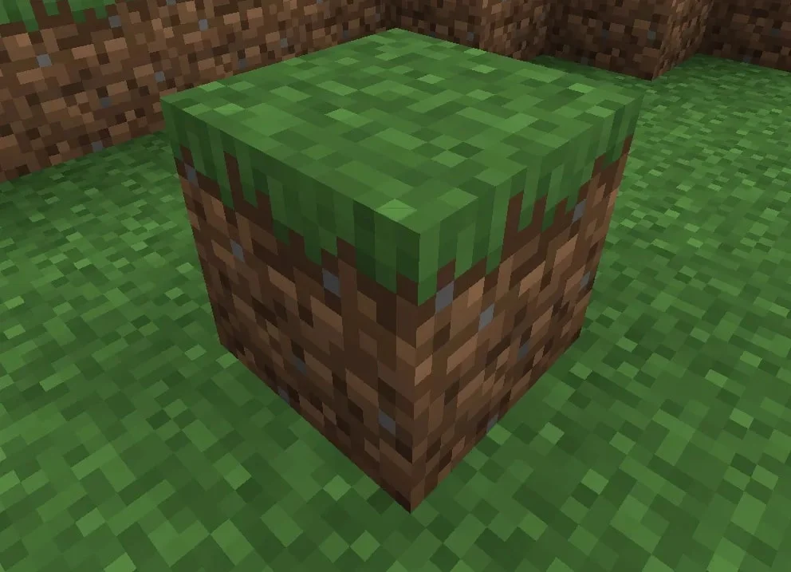

A Guide to Minecraft

This website will help you learn about Minecraft.
Grass
Natural terrain blocks that make up the top surface of the overworld.
Dirt
Natrual terrain blocks found in the top part of the ground. If exposed to light, they become grass blocks.
Stone
Natrual terrain blocks found under the dirt. Perfect for mining in!
Ores
Underground blocks that produce loot when broken. Ores can only be broken with pickaxes.
Wood
Natural blocks that trees are made up of.
Sand
Natural terrain blocks found in deserts and beaches. Sand is one of the only blocks in the game that fall!
Planks and Slabs
Crafted from wood, these blocks are used in buildings.
Glass
Glass is made with sand in a furnace. Perfect for windows.
TNT
Blocks that explode when detonated with Flint and Steel or a Redstone current.


